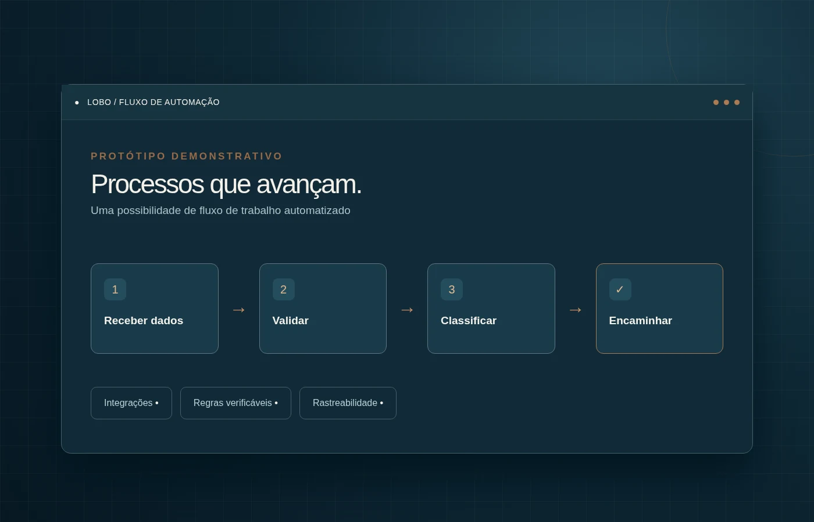
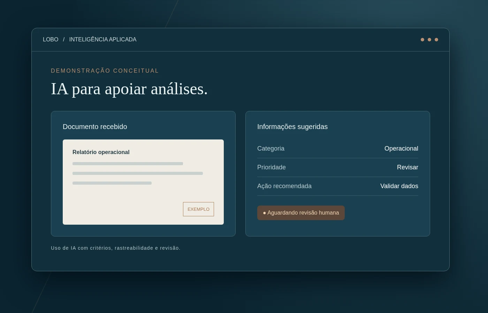
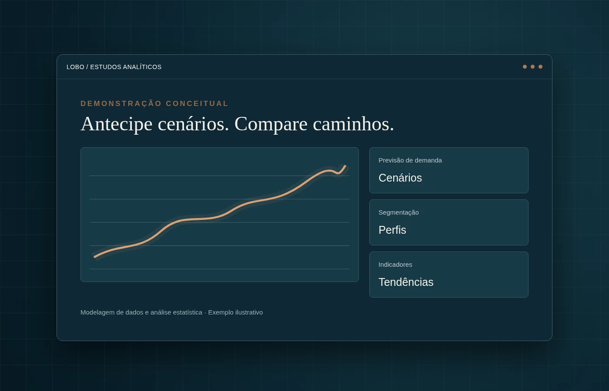

Oferta 02 / Implementação
Projetos que viram soluções.
Desenvolvemos dashboards, automatizamos processos, implantamos agentes de IA e criamos modelos preditivos para desafios específicos do seu negócio.
Converse sobre seu projeto



O que desenvolvemos
Quatro frentes. Soluções sob medida.
Os projetos podem combinar diferentes competências. Escolhemos as tecnologias a partir do problema, do contexto e do resultado esperado.
Dados e inteligência de negócios
Dashboards financeiros e comerciais, indicadores, análise de rentabilidade e integração de fontes.
Automação de processos
Conciliação de informações, geração de relatórios e integrações para eliminar tarefas manuais.
Inteligência artificial aplicada
Agentes de IA, classificação e análise de documentos, extração de informações e assistentes internos.
Ciência de dados e modelagem
Previsão de demanda, segmentação de clientes, modelos de risco e identificação de padrões.
Como entregamos
Da implementação ao uso.
Contratamos o projeto completo, com preço fechado e entregas por etapas. Testamos a solução, treinamos os usuários e oferecemos três meses de suporte após a entrega.
Fale com a Lobo